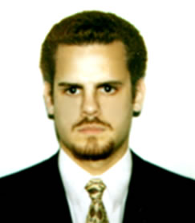

Cuento con una muy vasta experiencia laboral, desarrollada a través de mi desempeño en el liderazgo de diferentes proyectos para variadas organizaciones nacionales e internacionales. Mis conocimientos y experiencia en el área del diseño gráfico y la programación (Ux/UI – Front & Back End), se aplicarán a la creatividad y funcionalidad en el desarrollo de proyectos.Trayectoria Laboral
( 2007 - Actual ) Independientemente.
Trabajos Freelance para España.
Trabajos destacados:
Ux/Ui E-Commerce Via Vatra, Ui Web Site Coelpla, Web Site Papelera Alsina, Web Site Plantas Medicinales (Base de Datos), Web Site Remedios Naturales, Packaging Megareduce, Ux/Ui para Seguridad Hotelera, Papelera Alsina, Neotropico Web.
SOLICITAR CARPETA DE TRABAJOS
( 1997 - 2007 ) XL-Sistemas (LV&D).
Cargo: Desarrollos UX/UI, diseño visual y planificación de Interactivos Médicos para diferentes países y de Sitios Web para laboratorios en Internet.
Tarea desarrollada:
Desarrollando interactivos para ayuda médico-paciente coordinando contenidos con el Departamento Médico y el área de programación.
Implementando diseño y desarrollo en Web sites, coordinando los distintos equipos de trabajo (programadores y diseñadores) y en contacto con el cliente.
Trabajos destacados:
Novartis, Bayer, Pfizer, Pfizer Sanidad Animal, Schering Plough.
SOLICITAR CARPETA DE TRABAJOS
( 1996 - 1997 ) Interaction
Cargo: Diseño de Web Sites y Piezas Gráficas.
Tarea desarrollada:
Diseño y programación de Web Sites, implementando técnicas gráficas para crear nuevos estilos. Armado de diferentes piezas graficas corporativas.
Trabajos destacados:
Web Site del Holding Cargill.
( 1993 - 1995 ) Agrelo Publicidad
Cargo: Asistente gráfico.
Tarea desarrollada: realizando tareas de cadetería.
( 1992 - 1993 ) Intercom
Cargo: Ayudante en el departamento de sistemas
Tarea desarrollada: Mantenimiento de equipos y solucionando posibles fallas en los equipos.
Terciario: - Técnico Superior en Diseño Gráfico y Publicidad (Titulo)
Instituto Panamericana de Diseño y Publicidad
TITULO HOMOLOGADO EN ESPAÑA
- Analista de Sistemas ( 2 años - sin terminar)
Fundación Banco Boston
- Profesorado en Artes Visuales
Instituto Universitario Nacional Prilidiano Pueyrredón
Idiomas: - Inglés – Nivel: Avanzado
Titulo: Preliminary English Test (Cambridge Inglaterra)
- Alemán – Nivel: Básico (En Curso)